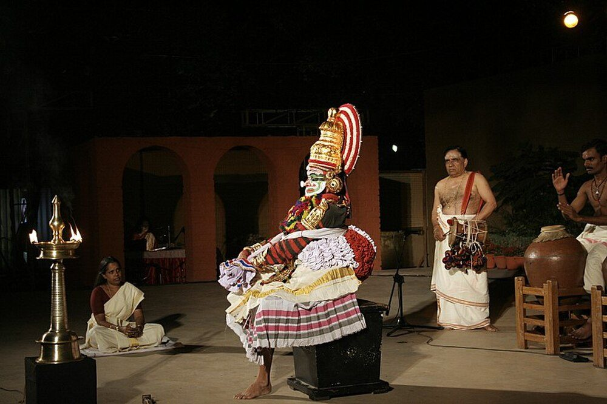

Chapter 3: Sanskrit Drama: Dṛśya Kāvya¶
na taj jñānaṃ na tac chilpaṃ na sā vidyā na sā kalā |
nāsau yogo na tat karma nāṭye ’smin yan na dṛśyate ||
There is no knowledge, no craft, no learning, no art, no technique and no action that is not seen in this drama.
— Nāṭyaśāstra 1.116 (Ghosh’s numbering)
3.1 Drama in Indian Aesthetics¶
For the Sanskrit theorists drama (nāṭya, rūpaka) was the paradigm of literature. The theory of rasa was first formulated for the theatre, and later writers on poetry continued to illustrate it from plays. Drama was “poetry to be seen” (dṛśya kāvya): it combined verse and prose with music, dance, gesture, costume and the physical presence of actors.
The foundational text is the Nāṭyaśāstra attributed to the sage Bharata, a large compendium on all aspects of theatre. It is a composite work, compiled over several centuries; most scholars place its main body between about 200 BCE and 200 CE, with later additions. Manomohan Ghosh’s translation remains the standard English version (Ghosh 1950).
The first chapter tells how the gods asked Brahmā for an entertainment that could be seen and heard by all, since the Vedas could not be recited in the hearing of Śūdras. Brahmā therefore created a fifth Veda, open to all classes (sārvavarṇika), drawing on the four existing Vedas:
Nāṭyaśāstra 1.17
jagrāha pāṭhyam ṛgvedāt sāmabhyo gītam eva ca |
yajurvedād abhinayān rasān ātharvaṇād api ||
He took recitation from the Ṛgveda, song from the Sāmaveda, acting from the Yajurveda and the sentiments (rasa) from the Atharvaveda.
The story is revealing in two ways. It claims Vedic authority for the theatre, and it acknowledges the exclusion of Śūdras from Vedic learning, presenting drama as a form of instruction and pleasure available to everyone.
3.2 The Nāṭyaśāstra: Contents¶
The Nāṭyaśāstra has thirty-six or thirty-seven chapters, depending on the recension, and their numbering differs between editions. Table 3.1 summarises its contents in broad groups following Ghosh’s arrangement. Its treatment of music, dance and stagecraft is discussed in Volume 9 of this series, Saṅgīta–Nāṭya; this chapter is concerned with drama as literature.
| Chapters | Subject |
|---|---|
| 1–5 | Origin of drama; the playhouse and its consecration; the tāṇḍava dance with its 108 karaṇas (units of movement); the preliminary rites (pūrvaraṅga) |
| 6–7 | Rasa and bhāva (sentiments and emotional states) |
| 8–14 | Bodily acting (āṅgika abhinaya): head, eyes, hands and body; the 32 cārīs (movements of the feet and legs); gaits; zones of the stage and regional styles |
| 15–19 | Verbal acting (vācika abhinaya): phonetics and grammar, prosody, poetic figures, qualities and faults, the languages and dialects of the stage, modes of address |
| 20–22 | The ten types of play; the structure of plot; the dramatic styles (vṛtti) |
| 23 | Costume and make-up (āhārya abhinaya) |
| 24–27 | General acting; the representation of love; “success” in performance |
| 28–33 | Music: tones, scales, instruments and drumming |
| 34–36 | Types of characters; distribution of roles; the descent of drama to earth |
3.2.1 The Playhouse¶
The second chapter of the Nāṭyaśāstra describes the theatre building (nāṭyamaṇḍapa). It recognises three shapes — rectangular (vikṛṣṭa), square (caturaśra) and triangular (tryaśra) — and three sizes, the largest 108 cubits (hasta) long, the medium 64 and the smallest 32. It recommends the medium rectangular hall, 64 cubits by 32, as best, because in a larger house the actors’ voices and facial expressions would be lost. The hall is divided between the auditorium and the stage, which has a front area for acting and a rear area behind a curtain for the actors’ preparation, from which entrances are made through two doors. The text gives detailed instructions on the choice of site, the laying of foundations, the pillars, and the rites of consecration that protect the performance from obstacles. Its insistence on audibility and visibility reflects the importance of speech and facial expression in Indian acting. Whether actual theatres followed these prescriptions is unknown; the only surviving early structures sometimes identified as theatres, such as the cave at Sītābeṅgā in Chhattisgarh, are uncertain, and the temple theatres (kūttampalam) of Kerala date from the second millennium.
3.2.2 The Four Modes of Acting¶
The text distinguishes four modes of acting: āṅgika (bodily), vācika (verbal), āhārya (costume, make-up and properties) and sāttvika (the involuntary signs of emotion such as tears, trembling, perspiration and change of colour, which the actor must be able to produce).
3.3 Types of Drama¶
The Nāṭyaśāstra, and after it Dhanañjaya’s Daśarūpaka (late tenth century), the most widely used later handbook of dramaturgy, recognise ten types of play (rūpaka; Table 3.2).
| Type | Acts | Characteristics |
|---|---|---|
| Nāṭaka | 5–10 | Story from legend or history; a renowned, noble hero, usually royal or divine; dominant rasa heroic or erotic |
| Prakaraṇa | 5–10 | Invented plot; hero a brahmin, minister or merchant; the heroine may be a courtesan |
| Bhāṇa | 1 | Monologue by a man-about-town (viṭa) who converses with imaginary interlocutors |
| Prahasana | 1 | Farce, often satirising ascetics, brahmins or officials |
| Ḍima | 4 | Spectacular play with gods, demons and supernatural events; furious sentiment |
| Vyāyoga | 1 | Martial episode from the epics; few female characters |
| Samavakāra | 3 | Conflict of gods and demons |
| Vīthī | 1 | Short piece with one or two characters |
| Aṅka (Utsṛṣṭikāṅka) | 1 | Pathos; laments, often of women, after a battle |
| Īhāmṛga | 4 | A hero’s pursuit of a divine woman who is hard to win |
Later writers added a varying list of “minor” types (uparūpaka), several of which involve music and dance (Table 3.3). The most important for literature are the nāṭikā, a four-act court comedy such as Harṣa’s Ratnāvalī, and the saṭṭaka, a similar play written wholly in Prakrit, such as Rājaśekhara’s Karpūramañjarī.
| Form | Characteristics |
|---|---|
| Nāṭikā | Four acts; court intrigue around a king, his queen and a young heroine (Ratnāvalī, Priyadarśikā) |
| Saṭṭaka | Like the nāṭikā, but entirely in Prakrit (Karpūramañjarī) |
| Toṭaka | Several acts, with divine and human characters; Kālidāsa’s Vikramorvaśīya is sometimes so classified |
| Rāsaka, Hallīśaka | Forms dominated by dance and song, the latter a circular dance of women around a single man |
3.4 Plot, Character and Convention¶
3.4.1 The Structure of the Plot¶
Sanskrit dramaturgy analysed plot in three parallel sets of five terms:
-
five stages of action (avasthā) in the hero’s pursuit of his goal: beginning (ārambha), effort (yatna), prospect of success (prāptyāśā), certainty of success (niyatāpti) and attainment (phalāgama);
-
five elements of the plot (arthaprakṛti): the seed (bīja) from which the action grows, the drop (bindu) that keeps it continuous when interrupted, the extended episode (patākā), the brief episode (prakarī) and the outcome (kārya);
-
five junctures (sandhi) that join stages and elements into the structure of the play: opening (mukha), progression (pratimukha), development (garbha), crisis or pause (vimarśa) and conclusion (nirvahaṇa).
3.4.2 Hero and Heroine¶
The theorists classified heroes by temperament. Each type was meant to be self-possessed (dhīra); the four types are set out in Table 3.4.
| Type | Qualities | Standard examples |
|---|---|---|
| Dhīrodātta | Noble, controlled, magnanimous | Rāma; Yudhiṣṭhira; often Duṣyanta |
| Dhīralalita | Carefree, devoted to the arts and pleasure | King Udayana (Vatsarāja) in Harṣa’s nāṭikās |
| Dhīrapraśānta | Calm and virtuous; usually a brahmin or merchant | Cārudatta in the Mṛcchakaṭika; Mādhava in the Mālatīmādhava |
| Dhīroddhata | Proud, fierce and boastful | Bhīma; Paraśurāma; Rāvaṇa |
Heroines (nāyikā) were classified with equal elaboration — as one’s own wife, another’s wife or a courtesan; by age and experience; and by situation, in the eightfold scheme (aṣṭanāyikā) that became central to later poetry, painting and dance (the heroine waiting in the trysting place, the heroine separated by a quarrel, the heroine whose lover is abroad, and so on).
3.4.3 Conventions of Performance¶
A performance began with preliminary rites (pūrvaraṅga) and a benediction (nāndī), followed by a prologue (prastāvanā) in which the stage manager (sūtradhāra) and usually an actress introduce the play and its author. The theorists forbade showing on stage, among other things, death, battle, the overthrow of a kingdom, eating, bathing, sleeping and love-making; such events are reported, often in interludes (viṣkambhaka, praveśaka) between the acts. The nāṭaka was to end auspiciously, with the hero’s success. Two further conventions, the brahmin jester and the assignment of languages to characters by status and gender, are discussed below.
3.4.4 The Vidūṣaka¶
The brahmin jester is the most distinctive stock character of Sanskrit drama. Ugly, greedy for sweets, cowardly and fond of misusing learned words, he speaks Prakrit although a brahmin, and serves as the king’s friend and confidant, carrying messages, devising schemes and puncturing the hero’s romantic rhetoric with comic literalism. In Kālidāsa’s Abhijñānaśākuntala Māḍhavya complains of the hardships of the hunt and is sent away before the king’s secret can be revealed; in Harṣa’s Ratnāvalī the jester’s blunders nearly ruin the lovers. Scholars have traced the figure to ritual clowns and popular entertainers, and he lives on in the regional theatres, above all in the Cākyār actor’s long satirical monologues in Kūṭiyāṭṭam, where the vidūṣaka comments in Malayalam on contemporary society. His comedy depends on the incongruity between his brahmin status and his behaviour, and thus on the social hierarchy itself.
3.5 Bhāsa and the Trivandrum Plays¶
Bhāsa was known for centuries only by reputation: Kālidāsa names him in the prologue of the Mālavikāgnimitra as one of the famous dramatists of the past, and later authors quote him. In 1909–10 the scholar T. Gaṇapati Śāstrī found in Kerala manuscripts of thirteen anonymous plays which he attributed to Bhāsa and published from 1912 in the Trivandrum Sanskrit Series. The attribution remains debated: the plays share features of style and structure, and one of them corresponds to a play that later writers ascribe to Bhāsa, but the texts as we have them may be acting versions transmitted and adapted by the Cākyār actors of Kerala. Bhāsa’s date is uncertain; he preceded Kālidāsa. The principal plays are listed in Table 3.5.
| Play | Source of story | Notes |
|---|---|---|
| Svapnavāsavadatta | Udayana cycle | Queen Vāsavadattā, believed dead, lives in disguise while her husband takes a second wife for political reasons; the dream scene of Act 5 |
| Pratijñāyaugandharāyaṇa | Udayana cycle | The minister Yaugandharāyaṇa’s plan to rescue the captive king |
| Ūrubhaṅga | Mahābhārata | The dying Duryodhana on stage, reconciled and dignified |
| Karṇabhāra | Mahābhārata | Karṇa gives away his protective armour to Indra disguised as a brahmin |
| Madhyamavyāyoga | Mahābhārata | Bhīma meets his son Ghaṭotkaca, who does not recognise him |
| Dūtavākya, Pañcarātra | Mahābhārata | Kṛṣṇa’s embassy; an episode of the Virāṭa book |
| Pratimānāṭaka, Abhiṣekanāṭaka | Rāmāyaṇa | Episodes of the Rāma story |
| Cārudatta | Invented | A four-act fragment closely related to the Mṛcchakaṭika |
The Ūrubhaṅga (“The Breaking of the Thighs”) is especially important for the history of the theatre. It shows Duryodhana mortally wounded by Bhīma’s unfair blow and dying on stage, surrounded by his blind parents, his wives and his small son. The play, in a single act (its genre is disputed; it is often classed as an utsṛṣṭikāṅka, the one-act play of lament), grants the epic’s villain a nobility and pathos that the epic itself only partly allows, and it shows that the conventions of the theorists were not always observed in practice.
3.5.1 The Vision of Vāsavadattā¶
The Svapnavāsavadatta, the most admired of the Trivandrum plays, shows the subtlety these works can achieve. King Udayana of Vatsa has lost his kingdom; his minister Yaugandharāyaṇa believes that it can be recovered only through an alliance with the king of Magadha by marriage to the princess Padmāvatī. Since Udayana is devoted to his queen Vāsavadattā and will not remarry, the minister spreads the news that the queen has died in a fire, and leaves her, disguised as his sister, in Padmāvatī’s care. Vāsavadattā must thus watch her husband court and marry another woman for the sake of his kingdom. In the fifth act the king, asleep in a pavilion, speaks Vāsavadattā’s name in a dream; she, entering by chance, adjusts the hand that has slipped from his bed and slips away, and on waking he cannot be sure whether he dreamed her presence or not. The play ends with recognition, the recovery of the kingdom and the reconciliation of the two queens. Its quiet, restrained treatment of loss and loyalty has made it a favourite of modern readers.
3.6 Kālidāsa’s Plays¶
Kālidāsa wrote three plays. Barbara Stoler Miller and her collaborators translated all three in Theater of Memory, whose introduction is an excellent guide to Kālidāsa’s dramaturgy (Miller 1984).
3.6.1 Mālavikāgnimitra¶
Mālavikāgnimitra (“Mālavikā and Agnimitra”), probably the earliest, is a five-act palace comedy set at the court of the Śuṅga king Agnimitra (second century BCE), who falls in love with the dancer Mālavikā, a princess in disguise serving his queen. In the prologue the stage manager defends the staging of a new play by a living author against the prestige of Bhāsa and other older dramatists:
Mālavikāgnimitra 1.2
purāṇam ity eva na sādhu sarvaṃ na cāpi kāvyaṃ navam ity avadyam |
santaḥ parīkṣyānyatarad bhajante mūḍhaḥ parapratyayaneyabuddhiḥ ||
Not everything is good just because it is old, nor is a poem to be blamed because it is new. The discerning test both and choose; the fool’s judgement is led by the opinion of others.
3.6.2 Vikramorvaśīya¶
Vikramorvaśīya (“Urvaśī Won by Valour”) dramatises in five acts the ancient story, already found in the Ṛgveda and the Śatapatha Brāhmaṇa, of King Purūravas and the celestial nymph Urvaśī. Its fourth act, in which the king, believing Urvaśī lost, wanders through a forest addressing clouds, peacocks, a river and an elephant, is a celebrated study of love-madness (unmāda). In one recension the act includes songs in Apabhraṃśa, among the earliest literary uses of that language.
3.6.3 Abhijñānaśākuntala¶
The Abhijñānaśākuntala (“Śakuntalā Recognised by a Token”) is Kālidāsa’s masterpiece and the most famous of all Sanskrit plays. In seven acts it tells of King Duṣyanta’s love for Śakuntalā, foster-daughter of the sage Kaṇva, their secret marriage, the curse that makes the king forget her, and their eventual reunion.
The play opens with Duṣyanta out hunting. He follows a deer into Kaṇva’s hermitage and sees Śakuntalā watering the trees with her two friends. In the second act the lovesick king confides in the vidūṣaka and finds a pretext to stay near the hermitage, and in the third the lovers meet and, it is implied, marry by mutual consent (gāndharva vivāha). An interlude at the start of the fourth act reveals that the irascible sage Durvāsas, neglected by the absent-minded Śakuntalā, has cursed her to be forgotten by her lover until he sees a token of recognition. The rest of that act is her departure from the hermitage for the king’s court, one of the most moving scenes in Sanskrit drama. At court, in the fifth act, the king does not know her. The ring he gave her has been lost on the way, and she is rejected and carried away by a heavenly light. In the sixth act a fisherman finds the ring in a fish, and the king’s memory returns with a remorse that consumes him. In the last act, returning from a battle fought on behalf of the gods, Duṣyanta finds Śakuntalā and their son Bharata in the celestial hermitage of Mārīca.
At the beginning of Act 5, before Śakuntalā arrives, the king hears a song sung by one of his queens and feels an unaccountable longing. He reflects:
Abhijñānaśākuntala 5.2
ramyāṇi vīkṣya madhurāṃś ca niśamya śabdān
paryutsuko bhavati yat sukhito ’pi jantuḥ |
tac cetasā smarati nūnam abodhapūrvaṃ
bhāvasthirāṇi jananāntarasauhṛdāni ||
When even a happy man grows restless on seeing beautiful things and hearing sweet sounds, surely he is remembering, without knowing it, the loves of former lives, fixed firmly in his heart.
The verse states the play’s central theme of memory and forgetting. Kālidāsa’s source, the story of Śakuntalā in the first book of the Mahābhārata, contains no curse and no ring: there Duṣyanta knowingly denies Śakuntalā when she comes to court with their son, and acknowledges her only when a heavenly voice confirms her claim. By introducing the curse Kālidāsa relieves the king of responsibility; modern readers have been divided over whether this ennobles the story or evades the moral issue that the epic version raises so sharply.
3.6.4 Śakuntalā’s Departure¶
The fourth act was singled out by the tradition as the heart of the play. Kaṇva, returning from a pilgrimage, learns of Śakuntalā’s marriage and her pregnancy and arranges for her to go to her husband. The act is a sequence of leave-takings: the hermit women adorn her with ornaments given by the trees of the forest; she bids farewell to her friends, to the creeper she called her sister, and to a fawn she raised, which tugs at her garment. Kaṇva, an ascetic who has renounced all attachment, finds himself overcome:
Abhijñānaśākuntala 4.6
yāsyaty adya śakuntaleti hṛdayaṃ saṃspṛṣṭam utkaṇṭhayā
kaṇṭhaḥ stambhitabāṣpavṛttikaluṣaś cintājaḍaṃ darśanam |
vaiklavyaṃ mama tāvad īdṛśam idaṃ snehād araṇyaukasaḥ
pīḍyante gṛhiṇaḥ kathaṃ nu tanayāviśleṣaduḥkhair navaiḥ ||
“Śakuntalā goes today”: at the thought my heart is touched with sorrow, my throat choked with held-back tears, my sight dulled with care. If such is the distress, through affection, of a forest-dweller like me, how must householders suffer at the fresh pain of parting from a daughter?
The scene draws on the universal experience of a daughter leaving her parents’ home at marriage, and it is still the best-loved passage of the play in India. It also prepares, by contrast, for the cold reception that awaits Śakuntalā at court.
3.7 Śūdraka: The Little Clay Cart¶
The Mṛcchakaṭika (“The Little Clay Cart”), attributed to a king Śūdraka of whom nothing reliable is known, is usually dated between the third and fifth centuries CE. It is a prakaraṇa in ten acts, expanding the plot of the Cārudatta fragment of the Trivandrum plays. The impoverished but generous brahmin merchant Cārudatta loves, and is loved by, the courtesan Vasantasenā. The king’s boorish brother-in-law Śakāra, whose advances she rejects, tries to strangle her and accuses Cārudatta of her murder; Cārudatta is condemned and led to execution, but is saved when Vasantasenā, who has survived, appears, and when a popular rising led by the cowherd Āryaka overthrows the tyrant Pālaka.
The play is remarkable for its range of urban characters — gamblers, a thief who cites a treatise on burglary, a masseur turned Buddhist monk, executioners, courtiers and judges — and for its humour and suspense. Its title comes from a scene in which Cārudatta’s small son cries because his clay toy cart is not a gold one like his playmate’s, and Vasantasenā fills it with her jewels.
3.8 Viśākhadatta and Harṣa¶
3.8.1 Mudrārākṣasa¶
Viśākhadatta’s Mudrārākṣasa (“Rākṣasa and the Signet Ring”), in seven acts, is a political drama without a love plot. Its date is uncertain; proposals range from the fifth to the ninth century. Cāṇakya, having helped Candragupta Maurya to overthrow the Nandas, works to win over Rākṣasa, the able and loyal minister of the old dynasty, by an elaborate web of spies, forged letters and a stolen signet ring. The contest between two intelligent and principled opponents, and Cāṇakya’s final success in making Rākṣasa Candragupta’s minister, give the play a character unique in Sanskrit drama. Fragments of another play by Viśākhadatta, the Devīcandragupta, survive in quotations.
3.8.2 Harṣa¶
King Harṣavardhana of Kanauj (r. 606–647) is credited with three plays: two nāṭikās, Ratnāvalī and Priyadarśikā, polished comedies of court intrigue centred on King Udayana; and the Nāgānanda (“Joy of the Serpents”), the best-known Sanskrit play on a Buddhist theme.
3.8.3 The Court Comedy: Ratnāvalī¶
Harṣa’s Ratnāvalī became the model nāṭikā for the theorists, who quote it constantly. A princess of Sri Lanka, Ratnāvalī, destined by prophecy to marry a world-ruler, is shipwrecked on her way to King Udayana and enters the household of his queen Vāsavadattā as a maidservant under the name Sāgarikā. She falls in love with the king, paints his portrait, and is discovered; the jealous queen has her confined; a magician’s illusion of a fire allows the king to rescue her; and when her identity is revealed the queen consents to the marriage. The play’s spring festival, its painting and portrait scenes, and the comic schemes of the vidūṣaka set the pattern for a whole genre of court comedy, in which a king’s pursuit of a new love is played out against the authority of his chief queen.
The Nāgānanda is more unusual. Its first three acts are a conventional love comedy in which the prince Jīmūtavāhana, who has renounced his kingdom to serve his parents in the forest, wins the princess Malayavatī. In the last two acts the tone changes entirely: Jīmūtavāhana learns that the serpents must send one of their number each day to be eaten by Garuḍa, and he takes the place of the young serpent Śaṅkhacūḍa, whose mother is lamenting. Garuḍa, devouring him, is astonished by his calm, repents and vows to kill no more, and the goddess Gaurī restores the prince to life. The play opens with a benediction to the Buddha and celebrates the Mahāyāna ideal of self-sacrifice for others, yet it ends with the intervention of a Hindu goddess — a mixture that reflects the religious world of Harṣa’s court, which patronised both Buddhists and brahmins.
3.9 Bhavabhūti¶
Bhavabhūti (early eighth century), a brahmin from Vidarbha who lived at the court of Yaśovarman of Kanauj, wrote three plays: the Mahāvīracarita on the early life of Rāma; the Mālatīmādhava, a ten-act prakaraṇa of love, adventure and the macabre (including a scene in a cremation ground and a planned human sacrifice by a Kāpālika ascetic); and the Uttararāmacarita. He was conscious of standing apart from his contemporaries. In the prologue of the Mālatīmādhava he answers his critics:
Mālatīmādhava 1.6 (Kale’s edition; 1.8 in some others)
ye nāma kecid iha naḥ prathayanty avajñāṃ
jānanti te kim api tān prati naiṣa yatnaḥ |
utpatsyate ’sti mama ko ’pi samānadharmā
kālo hy ayaṃ niravadhir vipulā ca pṛthvī ||
Those who show contempt for me — they know something, no doubt; this effort is not for them. There will arise, or there exists, someone of like nature to mine; for time is boundless and the earth is wide.
3.9.1 Uttararāmacarita¶
The Uttararāmacarita (“The Later Story of Rāma”) takes up the most painful part of the Rāma story: Rāma’s abandonment of the pregnant Sītā because of the gossip of his subjects. Bhavabhūti alters the ending: where the Rāmāyaṇa ends with Sītā’s return to the earth, the play ends with reconciliation. Its seven acts are outlined in Table 3.6.
| Act | Content |
|---|---|
| 1 | Rāma and the pregnant Sītā view paintings of their earlier life; the spy reports the people’s slander; Rāma resolves to abandon Sītā |
| 2 | Twelve years later Rāma comes to the Daṇḍaka forest to kill the Śūdra ascetic Śambūka |
| 3 | The “shadow” scene: Sītā, made invisible, watches the grieving Rāma at Pañcavaṭī |
| 4 | Janaka and Kausalyā meet at Vālmīki’s hermitage and see the boy Lava |
| 5 | Lava fights Candraketu, guardian of Rāma’s sacrificial horse |
| 6 | Rāma meets Lava and Kuśa and is moved without knowing why |
| 7 | A play staged by Vālmīki depicts Sītā’s fate; Sītā is restored and the family reunited |
The second act retains the episode of Śambūka, the Śūdra killed by Rāma for practising asceticism forbidden to his class — an episode taken from the last book of the Rāmāyaṇa which troubled many later readers. Bhavabhūti retains it, but uneasily: his Rāma strikes while reproaching his own hand as the hand that banished Sītā, and Śambūka at once appears in a divine form to thank him. In the third act the river Tamasā speaks a verse that became a touchstone in the theory of rasa:
Uttararāmacarita 3.47
eko rasaḥ karuṇa eva nimittabhedād
bhinnaḥ pṛthak pṛthag ivāśrayate vivartān |
āvartabudbudataraṅgamayān vikārān
ambho yathā salilam eva tu tat samagram ||
There is one rasa, pathos alone; through difference of cause it is altered and seems to take on separate forms, just as water takes the forms of eddies, bubbles and waves, though all of it is only water.
3.10 Later Drama¶
Drama continued to be written throughout the second millennium. Notable works include Bhaṭṭa Nārāyaṇa’s Veṇīsaṃhāra (on the Mahābhārata war), much cited by the theorists; Murāri’s ornate Anargharāghava (ninth century); the plays of Rājaśekhara (early tenth century), including the Prakrit saṭṭaka Karpūramañjarī; and Kṛṣṇamiśra’s Prabodhacandrodaya (late eleventh century), an allegorical play whose characters are abstractions such as Discrimination, Delusion and Knowledge. The Veṇīsaṃhāra (“The Binding of the Braid”), probably of the seventh or eighth century, dramatises the Mahābhārata war from Draupadī’s vow not to bind up her hair, dishevelled when she was dragged into the assembly, until Bhīma has avenged her insult; its fierce scenes made it a favourite source of examples of the heroic and furious rasas. In Kerala, Śaktibhadra’s Āścaryacūḍāmaṇi (“The Wondrous Crest-Jewel”), a play on the Rāma story probably of the ninth century, became a staple of the Kūṭiyāṭṭam repertoire. The bhāṇa monologue, of which four early examples survive in the collection known as the Caturbhāṇī, gives a satirical picture of urban life among courtesans and men-about-town.
3.10.1 Farce: The Mattavilāsa and the Bhagavadajjuka¶
Two early one-act farces (prahasana) show the satirical side of the Sanskrit theatre. The Mattavilāsa (“Drunken Revelry”), by the Pallava king Mahendravarman I of Kāñci (early seventh century), shows a drunken Kāpālika ascetic and his female companion who lose their begging bowl, a skull, and accuse a Buddhist monk of stealing it; a Pāśupata ascetic is called in to judge, and the bowl is finally recovered from a madman who had snatched it from a dog. The play mocks the pretensions of religious sects with impartial glee. The Bhagavadajjuka (“The Saint and the Courtesan”), of uncertain authorship and date, is a comedy in which a yogin, to demonstrate his powers, enters the body of a dead courtesan, while the god of death’s messenger, to correct his mistake, puts the courtesan’s soul into the yogin’s body; the courtesan-yogin and the yogin-courtesan then behave hilariously out of character. Both plays are still performed in the Kūṭiyāṭṭam repertoire.
3.11 Language, Gender and Caste on the Stage¶
The Nāṭyaśāstra, and the later handbooks that refined its rules, assign languages to characters by social position. Kings, brahmins, ministers and other high-ranking men speak Sanskrit; women, including queens, generally speak Śaurasenī Prakrit, and in the classical plays their verses and songs are usually in Māhārāṣṭrī; servants, the vidūṣaka, and low-status characters speak Prakrit, and characters of the lowest status speak varieties such as Māgadhī. Exceptions were allowed: Buddhist nuns, courtesans and some exceptional women may speak Sanskrit, as the learned Kāmandakī does in the Mālatīmādhava.
This linguistic hierarchy has often been praised as a sign of the theatre’s realism. It is better understood as a convention that encoded social hierarchy. It reflects the fact that Sanskrit learning was restricted, in principle, to men of the upper varṇas, and it places women of every rank linguistically alongside servants. Similarly, the stock types of the theatre — the gluttonous brahmin jester, the courtesan with a heart of gold, the comic low-caste executioner — were shaped by the assumptions of a courtly and largely male audience. The Mṛcchakaṭika and some prahasanas show that dramatists could use these conventions to satirise the powerful, but the plays should not be read as neutral mirrors of society. The issue of who could be a dramatist is related: almost all known authors of Sanskrit drama were men of brahmin or royal background.
3.12 From Sanskrit Drama to Regional Theatre¶
By the early second millennium new composition of Sanskrit drama had become a largely learned pursuit, but the theatre itself lived on and was transformed in the regional languages. In Kerala, Kūṭiyāṭṭam preserved the staging of Sanskrit plays, while two new dance-dramas grew up beside it: Kṛṣṇanāṭṭam, based on the Sanskrit Kṛṣṇagīti (1654) of the Zamorin Mānavēda, a work modelled on the Gītagovinda, and Kathakaḷi, with its Malayalam āṭṭakkatha texts (Chapter 10). In Assam, Śaṅkaradeva’s one-act aṅkīyā nāṭ plays of the sixteenth century adopted the benediction and a sūtradhāra who sings, dances and narrates throughout; they remain part of the Sattriya tradition of the Vaiṣṇava monasteries (Chapter 9). In Karnataka and Andhra, Yakṣagāna and its relatives used a narrator-singer (bhāgavata) and episodes from the epics and Purāṇas, and in Tamil Nadu the Bhāgavata Mēḷa dance-dramas of Melattur, composed in Telugu, continued a tradition of devotional theatre performed by brahmin men.
These forms are not simple survivals of classical drama. They are new creations, shaped by devotional movements, regional languages and local performance traditions, which borrowed selectively from Sanskrit theory. Their study belongs to the history of theatre and dance, treated in Volume 9 of this series.
3.13 Sanskrit Drama and the World¶
European knowledge of Sanskrit drama began with Sir William Jones’s English translation of Śakuntalā (1789). Georg Forster’s German version (1791) was read with enthusiasm by Herder and Goethe, who wrote an admiring epigram on the play and borrowed the device of a prologue spoken by a theatre director for his Faust. Horace Hayman Wilson’s Select Specimens of the Theatre of the Hindus (1826–27) made several more plays available in English. A. B. Keith’s The Sanskrit Drama (1924) was long the standard account of the subject in English (Keith 1924).
Attempts to derive Sanskrit drama from Greek theatre, popular in the nineteenth century, have not been substantiated; the two traditions developed largely independently, and Sanskrit drama’s roots are more plausibly sought in Indian epic recitation, ritual and dance.
3.14 A Living Tradition: Kūṭiyāṭṭam¶
The only performance tradition of Sanskrit drama to survive continuously is Kūṭiyāṭṭam (“combined acting”) of Kerala, traditionally performed in temple theatres (kūttampalam) by men of the Cākyār community with women of the Naṅṅyār community and Nampyār drummers. Its documented history goes back about a thousand years; the Cēra king Kulaśekhara, author of two Sanskrit plays, is traditionally credited with reforming it. Kūṭiyāṭṭam stages single acts of plays (by Bhāsa, Harṣa, Śaktibhadra and others) over many nights (Figure 3.1), with extended elaborations in which an actor may take hours to develop a single verse through gesture. It uses a codified gestural language (mudrā) described in the manual Hastalakṣaṇadīpikā, and is accompanied by the large copper miḻāvu drums. UNESCO proclaimed Kūṭiyāṭṭam a Masterpiece of the Oral and Intangible Heritage of Humanity in 2001. Its performance practice is described more fully in Volume 9, Saṅgīta–Nāṭya.


Modern productions of Sanskrit plays, both in Sanskrit and in translation, have been staged by the National School of Drama and by directors such as K. N. Panikkar and Ratan Thiyam, while Kālidāsa’s plays have been adapted for the stage and screen in many Indian languages.